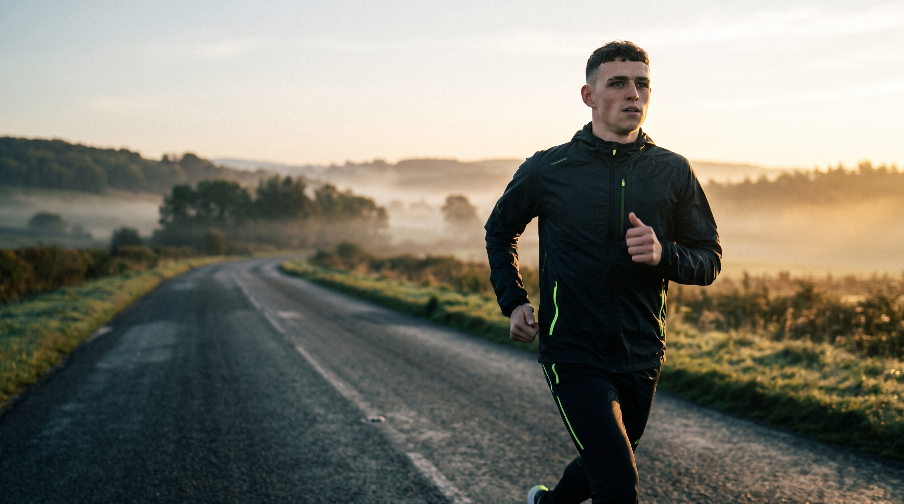
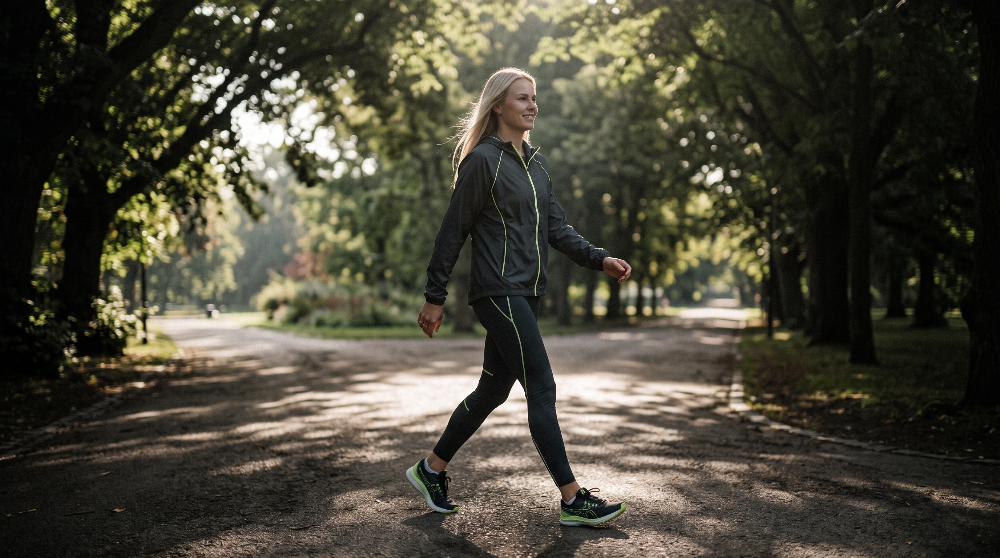
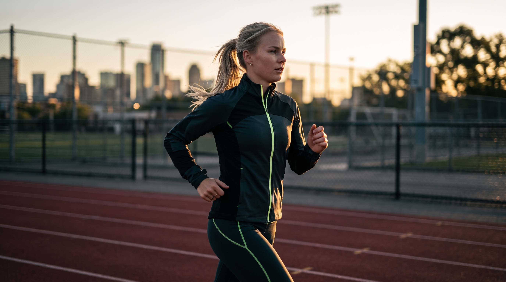
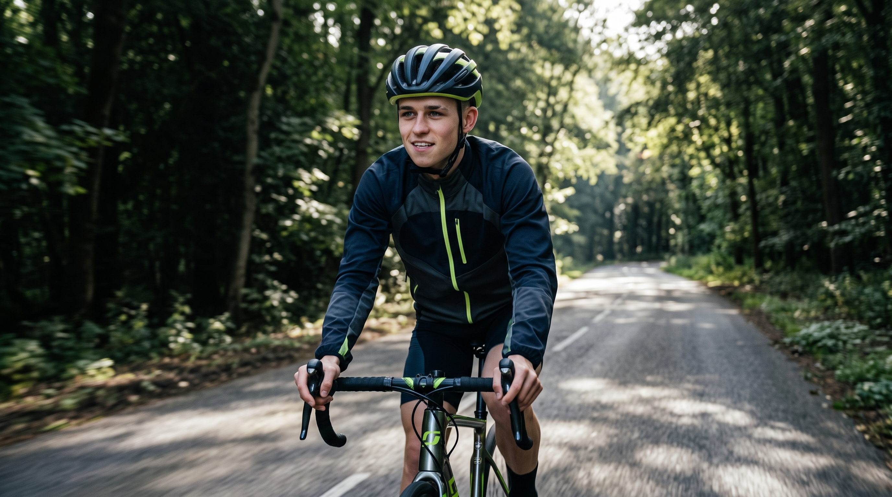
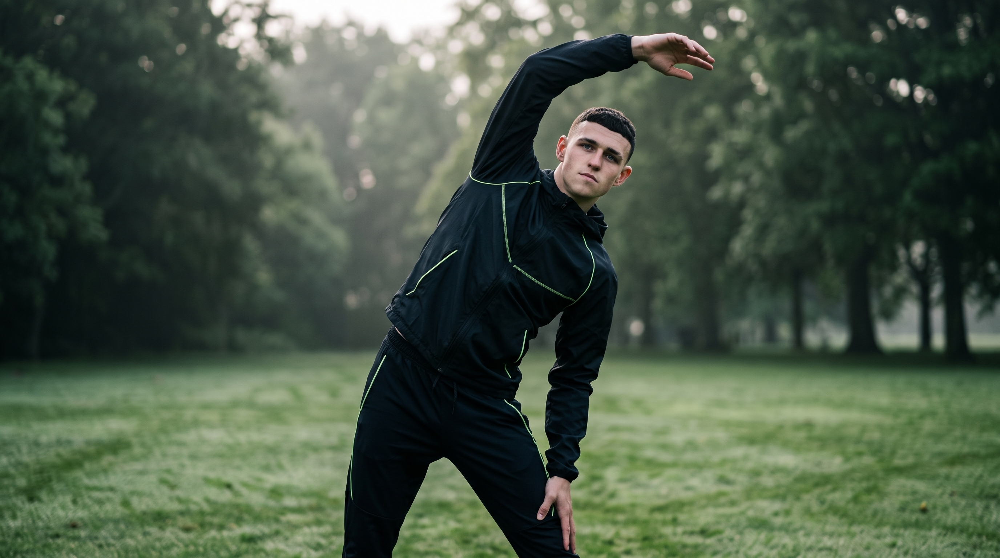
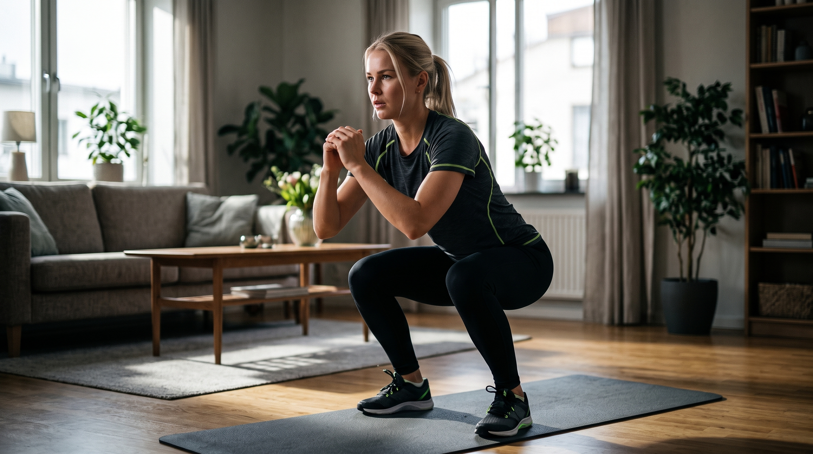
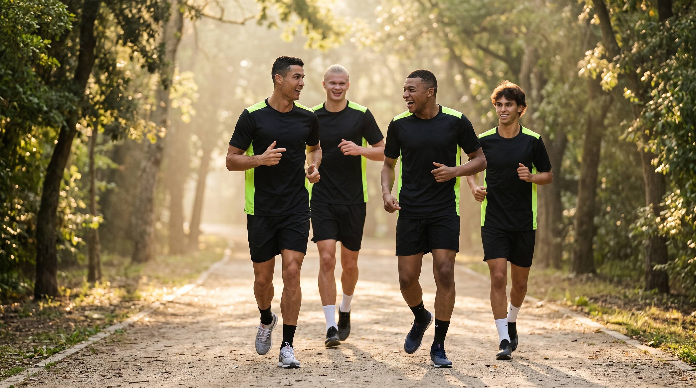

Menjaga Kesehatan Jantung
Menurut WHO (2020), aktivitas fisik yang rutin menurunkan risiko penyakit jantung dan hipertensi. Sajoto (1988) menyebut daya tahan jantung-paru sebagai salah satu komponen utama kondisi fisik.
Mulai dari langkah kecil. Kenali manfaat aktivitas fisik dan bangun gaya hidup aktif untuk tubuh yang lebih sehat.

Aktivitas fisik secara rutin merupakan bagian penting dari gaya hidup sehat. Mulai dari aktivitas ringan hingga olahraga terencana, setiap gerakan dapat membantu mendukung kesehatan tubuh.
Menurut WHO (2020), aktivitas fisik yang rutin menurunkan risiko penyakit jantung dan hipertensi. Sajoto (1988) menyebut daya tahan jantung-paru sebagai salah satu komponen utama kondisi fisik.
Harsono (1988) menempatkan kekuatan otot sebagai komponen dasar kondisi fisik yang berkembang lewat latihan teratur. Bompa dan Haff (2009) menegaskan bahwa beban perlu dinaikkan bertahap agar tubuh dapat beradaptasi.
WHO (2020) menyebut aktivitas fisik membantu mengurangi gejala depresi dan kecemasan. Harsono (1988) juga memandang latihan sebagai pembinaan menyeluruh yang mencakup aspek fisik dan mental.
WHO (2020) mencatat bahwa aktivitas fisik dapat memperbaiki kualitas tidur. Bompa dan Haff (2009) menempatkan istirahat dan pemulihan sebagai bagian penting agar tubuh pulih dan beradaptasi.
Menjalani hidup aktif tidak harus dimulai dengan latihan berat. Kamu bisa memulainya melalui aktivitas sederhana yang mudah dilakukan setiap hari.

WHO (2020) menganjurkan mengganti waktu duduk dengan aktivitas fisik dalam intensitas apa pun, termasuk berjalan kaki.

Termasuk latihan daya tahan, salah satu komponen kondisi fisik (Harsono, 1988; Sajoto, 1988). Bompa (1994) menegaskan beban harus ditingkatkan bertahap sesuai kemampuan.

Aktivitas aerobik yang melatih daya tahan jantung-paru (Sajoto, 1988) dan termasuk dalam anjuran aktivitas intensitas sedang menurut WHO (2020).

Harsono (1988) memasukkan kelentukan sebagai komponen kondisi fisik dan menempatkan pemanasan serta pendinginan sebagai bagian dari sesi latihan.

Sesuai prinsip beban bertambah (Harsono, 1988), mulailah dari gerakan ringan seperti squat dengan berat tubuh, lalu naikkan jumlah ulangan secara bertahap.

Harsono (1988) menyebut variasi dan partisipasi aktif sebagai prinsip latihan. Olahraga bersama teman, seperti jogging, sepak bola, atau basket, membuat latihan lebih bervariasi.
Tidak perlu mengubah seluruh rutinitas sekaligus. Bangun kebiasaan aktif secara bertahap dan pilih aktivitas yang sesuai dengan kondisi serta kemampuanmu.
WHO (2020) menganjurkan orang dewasa beraktivitas intensitas sedang 150–300 menit per minggu. Berjalan kaki pada perjalanan pendek dapat menjadi awal yang mudah.
Harsono (1988) menekankan pemanasan sebelum dan pendinginan sesudah latihan. Peregangan membantu menyiapkan tubuh sebelum bergerak.
WHO (2020) menyarankan membatasi waktu menetap (sedentary) dan menggantinya dengan gerak dalam bentuk apa pun.
Harsono (1988) menyebut variasi dan keaktifan berlatih sebagai prinsip latihan. Kegiatan yang beragam dan disukai membantu seseorang tetap bersungguh-sungguh berlatih.
Harsono (1988) mendefinisikan latihan sebagai proses sistematis yang dilakukan berulang-ulang dengan beban yang bertambah dari hari ke hari. Bompa (1994) menambahkan bahwa peningkatan itu harus bertahap, teratur, dan ajeg.
Tidak perlu menunggu sempurna untuk memulai. Pilih aktivitas yang kamu sukai dan jadikan gerak sebagai bagian dari keseharian.
MULAI DARI SEKARANGPenjelasan di website ini mengacu pada karya para ahli kepelatihan dan kebugaran berikut.